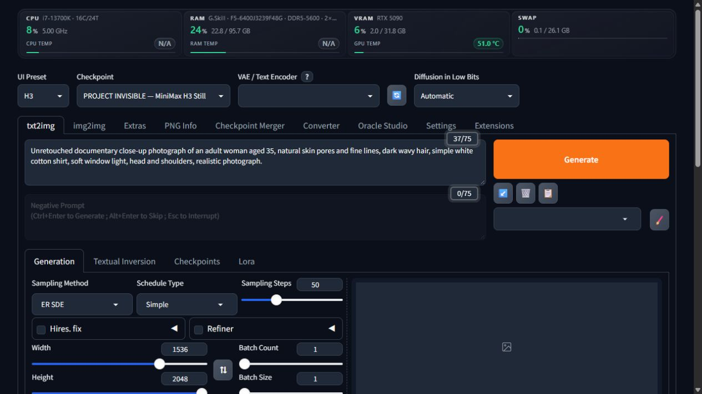

Meet H3.
Keep your workflow.
MiniMax H3 still images and reference editing through Forge's familiar Generate button. Select H3 in UI Preset. Your existing model folders, gallery and saving stay part of the workflow.



Install in three steps
- Download and extract the extension into Forge's
extensionsfolder. - Restart Forge and select H3 under UI Preset.
- Choose your H3 checkpoint, Qwen3-VL-32B encoder and H3 video VAE, then Generate.
First setup installs two pinned helper packages inside this extension. Model weights are downloaded separately. Generation runs locally and offline.
Built around Forge
- Native txt2img, img2img, Generate, Stop, gallery and saving.
- Two progress bars and developing previews.
- Sequential batches and an isolated worker that releases memory.
- No additional tab, virtual environment or Forge core changes.
Tested, with clear limits
58 automated tests passed. Live checks covered portraits, shirt-color editing, reference influence, LoRA removal, batches, browser refresh, Stop, recovery and model-switch cleanup on an RTX 5090.
Experimental FL2VA editing. Exact identity preservation is not guaranteed. INT8 and NVFP4 were tested locally; integer INT4 inference remains unverified, and GGUF is unsupported. Cold-start speed varies.
Special Thanks
- r/sdforall — community discussion and testing
- r/SECourses — community discussion and testing
- r/malcolmrey — community discussion and testing
- Haoming02 / sd-webui-forge-classic (neo branch) — the Forge Neo tree this extension targets
- ShootTheSound / Peter Neill and ComfyUI-Fizgig-H3-Still — H3 still-image latent and decoder implementation
- Adeliox — original Klein Head Swap
- Alissonerdx — BFS (Best Face Swap) workflow and LoRAs
- PozzettiAndrea / ComfyUI-SAM3 and Meta SAM3 — segmentation workflow inspiration across Project Invisible
- ComfyUI — H3 backend and upstream sampler/scheduler coverage
- The Forge / AUTOMATIC1111 community — for the extension ecosystem this plugs into
- Project Invisible extensions — memory policy, GPU compatibility and extension philosophy
Thank you to the wider Forge, Diffusers, Qwen, DeGrid and open-source communities. Head-swap, BFS and SAM3 credits acknowledge the wider ecosystem; those tools are not bundled H3 features.